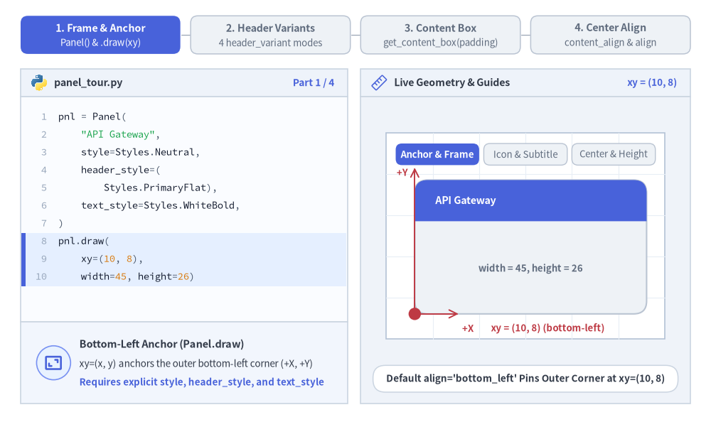

Panel
The Panel component renders titled container frames with a header band (header_variant="filled" | "underline" | "floating" | "window") and provides get_content_box(xy, width, height, padding=...) to automatically compute the inner drawable (inner_xy, inner_width, inner_height) for nesting other SmartArts, Charts, or Diagrams inside the container.
Every displayed element requires an explicit Style (style, header_style, text_style always; description_style when description is non-empty; icon_style when icon is provided; dot_styles when header_variant="window").

Source Code
from drawlib.canvas import save, setup
from drawlib.icons import phosphor
from drawlib.smartarts import CardList, KpiCards, Panel, Roadmap
from drawlib.styles import Styles
setup(width=160, height=112)
# 1. Top-Left: header_variant="filled"
p1 = Panel(
"1. Filled Header Band",
"header_variant='filled'",
style=Styles.Neutral,
header_style=Styles.PrimaryFlat,
text_style=Styles.WhiteBold.patch(text_size=11.0),
description_style=Styles.White.patch(text_size=9.5),
icon=phosphor.compass,
icon_style=Styles.White,
header_variant="filled",
header_height=8.5,
)
p1.draw((5.0, 58.0), width=72.0, height=49.0)
c1_xy, c1_w, c1_h = p1.get_content_box((5.0, 58.0), width=72.0, height=49.0, padding=(3.5, 3.0))
rm = Roadmap(
style=Styles.White,
text_style=Styles.DarkBold.patch(text_size=10.5),
description_style=Styles.Muted.patch(text_size=9.5),
spine_style=Styles.PrimaryBold,
badge_style=Styles.PrimaryFlat,
badge_text_style=Styles.WhiteBold.patch(text_size=10.0),
icon_style=Styles.PrimaryBold,
spacing=2.0,
)
rm.add("T+00m: Alert Triggered", "SYN flood hits 180 Gbps", badge_text="1", icon=phosphor.warning)
rm.add("T+05m: SLA Restored", "Anycast scrubbing active", badge_text="2", icon=phosphor.shield_check)
rm.draw(c1_xy, width=c1_w, height=c1_h)
# 2. Top-Right: header_variant="underline"
p2 = Panel(
"2. Underline Divider",
"header_variant='underline'",
style=Styles.SecondaryNeutral,
header_style=Styles.SecondaryBold,
text_style=Styles.SecondaryBold.patch(text_size=11.0),
description_style=Styles.Muted.patch(text_size=9.5),
icon=phosphor.chart_line_up,
icon_style=Styles.SecondaryBold,
header_variant="underline",
header_height=8.5,
)
p2.draw((83.0, 58.0), width=72.0, height=49.0)
c2_xy, c2_w, c2_h = p2.get_content_box((83.0, 58.0), width=72.0, height=49.0, padding=(3.5, 3.0))
kpi = KpiCards(
style=Styles.White,
metric_style=Styles.SecondaryBold.patch(text_size=13.5),
text_style=Styles.DarkBold.patch(text_size=10.5),
description_style=Styles.Muted.patch(text_size=9.5),
accent_style=Styles.SecondaryFlat,
icon_style=Styles.SecondaryBold,
metric_width_ratio=0.32,
spacing=2.2,
)
kpi.add("99.99%", "Availability SLA", "Multi-region active-active", icon=phosphor.globe_hemisphere_east)
kpi.add("11.4ms", "Origin Latency", "Edge cache hit ratio 94%", icon=phosphor.lightning)
kpi.draw(c2_xy, width=c2_w, height=c2_h)
# 3. Bottom-Left: header_variant="floating"
p3 = Panel(
"3. Floating Pill Badge",
"header_variant='floating'",
style=Styles.AccentNeutral,
header_style=Styles.AccentFlat,
text_style=Styles.WhiteBold.patch(text_size=10.5),
description_style=Styles.Muted.patch(text_size=9.5),
icon=phosphor.flag_banner,
icon_style=Styles.White,
header_variant="floating",
header_height=7.5,
)
p3.draw((5.0, 4.0), width=72.0, height=49.0)
c3_xy, c3_w, c3_h = p3.get_content_box((5.0, 4.0), width=72.0, height=49.0, padding=(3.5, 3.0))
cl3 = CardList(
style=Styles.White,
text_style=Styles.DarkBold.patch(text_size=10.5),
description_style=Styles.Muted.patch(text_size=9.5),
badge_style=Styles.AccentFlat,
badge_text_style=Styles.WhiteBold.patch(text_size=10.0),
icon_style=Styles.White,
spacing=2.2,
)
cl3.add("Zero-Copy Deserialization", "Direct mmap buffer access", badge_text="01")
cl3.add("Async Batch Commit", "Group WAL fsync every 2ms", badge_text="02")
cl3.draw(c3_xy, width=c3_w, height=c3_h)
# 4. Bottom-Right: header_variant="window"
p4 = Panel(
"4. Window Chrome",
"header_variant='window'",
style=Styles.Neutral,
header_style=Styles.DarkFlat,
text_style=Styles.WhiteBold.patch(text_size=10.5),
description_style=Styles.White.patch(text_size=9.5),
icon=phosphor.terminal_window,
icon_style=Styles.White,
dot_styles=(
Styles.DangerFlat.patch(shape_line_width=0),
Styles.WarningFlat.patch(shape_line_width=0),
Styles.SuccessFlat.patch(shape_line_width=0),
),
header_variant="window",
header_height=8.5,
header_align="left",
)
p4.draw((83.0, 4.0), width=72.0, height=49.0)
c4_xy, c4_w, c4_h = p4.get_content_box((83.0, 4.0), width=72.0, height=49.0, padding=(3.5, 3.0))
cl4 = CardList(
style=Styles.White,
text_style=Styles.DarkBold.patch(text_size=10.5),
description_style=Styles.Muted.patch(text_size=9.5),
badge_style=Styles.PrimaryFlat,
icon_style=Styles.White,
spacing=2.2,
)
cl4.add("dcli code-check all", "Ruff lint, Ty type & docstring checks", icon=phosphor.check_circle)
cl4.add("dcli docs build site", "Headless render & HTML generation", icon=phosphor.stack)
cl4.draw(c4_xy, width=c4_w, height=c4_h)
save()
1. Core Concepts & Basic Usage
Panel draws titled container cards anchored at the Bottom-Left (x, y) corner by default (align="bottom_left") or centered via align="center", supporting four header treatments ("filled", "underline", "floating", and "window"). Calling panel.get_content_box(xy, width, height, padding=..., content_align=...) automatically subtracts header_height and insets padding to return the safe inner (inner_xy, inner_width, inner_height) for nested components or center-anchored shapes:

Source Code
from __future__ import annotations
from collections.abc import Callable
from typing import Any
from drawlib.anim import Animation
from drawlib.canvas import save, setup
from drawlib.icons import code as code_icons
from drawlib.icons import phosphor
from drawlib.lines import line
from drawlib.shapes import circle, rectangle
from drawlib.smartarts import ChevronProcess, Panel, SourceCode, SourceCodeStyles
from drawlib.styles import Styles
from drawlib.text import text
W, H = 138.0, 82.0
setup(width=W, height=H)
anim = Animation(fps=10.0, loop=0)
CODE_TEXT_SIZE = 10.0
PT_TO_CANVAS = W / 720.0
FONT_CANVAS = CODE_TEXT_SIZE * PT_TO_CANVAS
LINE_H = FONT_CANVAS * 1.8
PAD_Y = FONT_CANVAS * 1.2
CODE_STYLES = SourceCodeStyles.get("default", font_lang="en", text_size=CODE_TEXT_SIZE).patch(
box_style=Styles.Neutral.patch(shape_fill_color=(0, 0, 0, 0), shape_line_width=0),
)
PANE_HEADER = Styles.Neutral.patch(
shape_fill_color=(238, 243, 250),
shape_line_color=(203, 213, 225),
shape_line_width=1.2,
shape_r=0.0,
)
EDITOR_BODY = Styles.Neutral.patch(
shape_fill_color=(250, 252, 255),
shape_line_color=(203, 213, 225),
shape_line_width=1.2,
shape_r=0.0,
)
TAKEAWAY_BODY = Styles.Neutral.patch(
shape_fill_color=(242, 246, 253),
shape_line_color=(203, 213, 225),
shape_line_width=1.2,
shape_r=0.0,
)
STUDIO_BODY = Styles.Neutral.patch(
shape_fill_color=(239, 243, 249),
shape_line_color=(203, 213, 225),
shape_line_width=1.2,
shape_r=0.0,
)
PART_ITEMS = [
("1. Frame & Anchor", "Panel() & .draw(xy)"),
("2. Header Variants", "4 header_variant modes"),
("3. Content Box", "get_content_box(padding)"),
("4. Center Align", "content_align & align"),
]
def draw_step_bar(active_part: int) -> None:
"""Draw top 4-part progress bar (active_part is 1..4)."""
pill_w = 31.0
pill_h = 7.4
gap = 2.0
start_x = 4.0 + pill_w / 2.0
cy = 75.2
for idx, (label, sublabel) in enumerate(PART_ITEMS, start=1):
cx = start_x + (idx - 1) * (pill_w + gap)
if idx > 1:
prev_cx = cx - (pill_w + gap)
line(
(prev_cx + pill_w / 2.0 + 0.2, cy),
(cx - pill_w / 2.0 - 0.2, cy),
style=Styles.PrimaryBold if idx <= active_part else Styles.MutedThin,
)
if idx == active_part:
st = Styles.PrimaryFlat.patch(shape_r=1.4)
tst = Styles.WhiteBold.patch(text_size=10.3)
sub_tst = Styles.White.patch(text_size=9.5)
elif idx < active_part:
st = Styles.PrimaryNeutral.patch(shape_r=1.4, shape_line_width=1.1)
tst = Styles.PrimaryBold.patch(text_size=10.3)
sub_tst = Styles.Primary.patch(text_size=9.5)
else:
st = Styles.Neutral.patch(shape_r=1.4, shape_line_width=1.1)
tst = Styles.MutedBold.patch(text_size=10.3)
sub_tst = Styles.Muted.patch(text_size=9.5)
rectangle((cx, cy), width=pill_w, height=pill_h, style=st)
text((cx, cy + 1.35), label, style=tst)
text((cx, cy - 1.55), sublabel, style=sub_tst)
def draw_left_pane(
active_part: int,
code_lines: list[str],
hl_range: tuple[int, int],
icon_fn: Callable[..., Any],
summary_title: str,
summary_line1: str,
summary_line2: str,
) -> None:
"""Draw left Python code editor + bottom concept takeaway card."""
x0, w = 4.0, 63.5
cx = x0 + w / 2.0
top_y = 63.2
header_h = 5.4
editor_h = 43.8
takeaway_h = 15.8
rectangle((cx, top_y + header_h / 2.0), width=w, height=header_h, style=PANE_HEADER)
code_icons.python((x0 + 3.6, top_y + header_h / 2.0), width=3.4, style=Styles.Neutral)
text(
(x0 + 6.5, top_y + header_h / 2.0),
"panel_tour.py",
style=Styles.DarkBold.patch(text_size=10.2, halign="left"),
)
text(
(x0 + w - 2.6, top_y + header_h / 2.0),
f"Part {active_part} / 4",
style=Styles.PrimaryBold.patch(text_size=9.8, halign="right"),
)
rectangle((cx, top_y - editor_h / 2.0), width=w, height=editor_h, style=EDITOR_BODY)
hl_start, hl_end = hl_range
hl_top = top_y - PAD_Y - hl_start * LINE_H
hl_bot = top_y - PAD_Y - (hl_end + 1) * LINE_H
hl_cy = (hl_top + hl_bot) / 2.0
hl_h = hl_top - hl_bot
rectangle(
(cx, hl_cy),
width=w - 0.6,
height=hl_h,
style=Styles.Neutral.patch(shape_fill_color=(229, 239, 255), shape_line_width=0),
)
rectangle(
(x0 + 0.55, hl_cy),
width=0.9,
height=hl_h,
style=Styles.PrimaryFlat.patch(shape_line_width=0),
)
SourceCode.draw(
xy=(x0, top_y),
width=w,
code="\n".join(code_lines),
styles=CODE_STYLES,
code_lang="python",
show_linenum=True,
align="top_left",
)
take_cy = 3.6 + takeaway_h / 2.0
rectangle((cx, take_cy), width=w, height=takeaway_h, style=TAKEAWAY_BODY)
circle(
(x0 + 6.4, take_cy),
radius=3.3,
style=Styles.PrimaryNeutral.patch(shape_line_width=1.2),
)
icon_fn((x0 + 6.4, take_cy), width=3.8, style=Styles.PrimaryBold)
text(
(x0 + 11.4, take_cy + 3.6),
summary_title,
style=Styles.DarkBold.patch(text_size=10.4, halign="left"),
)
text(
(x0 + 11.4, take_cy - 0.2),
summary_line1,
style=Styles.Dark.patch(text_size=9.7, halign="left"),
)
text(
(x0 + 11.4, take_cy - 3.8),
summary_line2,
style=Styles.PrimaryBold.patch(text_size=9.6, halign="left"),
)
def draw_geometry_studio(param_badge: str, footer_caption: str) -> tuple[float, float]:
"""Draw right geometry lab shell, inner coordinate sheet with subtle grid, and footer."""
x0, w = 70.0, 64.0
cx = x0 + w / 2.0
top_y = 63.2
header_h = 5.4
body_h = 59.6
rectangle((cx, top_y + header_h / 2.0), width=w, height=header_h, style=PANE_HEADER)
phosphor.ruler((x0 + 3.6, top_y + header_h / 2.0), width=3.4, style=Styles.Primary)
text(
(x0 + 6.5, top_y + header_h / 2.0),
"Live Geometry & Guides",
style=Styles.DarkBold.patch(text_size=10.2, halign="left"),
)
text(
(x0 + w - 2.6, top_y + header_h / 2.0),
param_badge,
style=Styles.PrimaryBold.patch(text_size=9.6, halign="right"),
)
rectangle((cx, 3.6 + body_h / 2.0), width=w, height=body_h, style=STUDIO_BODY)
sheet_cx, sheet_cy = cx, 36.2
sheet_w, sheet_h = 54.0, 40.0
sx0, sy0 = sheet_cx - sheet_w / 2.0, sheet_cy - sheet_h / 2.0
rectangle(
(sheet_cx, sheet_cy),
width=sheet_w,
height=sheet_h,
style=Styles.Neutral.patch(
shape_fill_color=(255, 255, 255),
shape_line_color=(180, 194, 214),
shape_line_width=1.2,
),
)
g_st = Styles.MutedThin.patch(line_color=(232, 238, 246), line_width=0.8)
for gx in range(1, 6):
vx = sx0 + gx * (sheet_w / 6.0)
line((vx, sy0), (vx, sy0 + sheet_h), style=g_st)
for gy in range(1, 5):
vy = sy0 + gy * (sheet_h / 5.0)
line((sx0, vy), (sx0 + sheet_w, vy), style=g_st)
rectangle(
(cx, 8.4),
width=59.2,
height=5.2,
style=Styles.Neutral.patch(
shape_fill_color=(255, 255, 255),
shape_line_color=(203, 213, 225),
shape_line_width=1.1,
shape_r=2.4,
),
text=footer_caption,
text_style=Styles.DarkBold.patch(text_size=9.8),
)
return sheet_cx, sheet_cy
def draw_sub_pills(scx: float, labels: list[str], active_idx: int) -> None:
"""Draw N-step tracker pills near the top of the studio sheet."""
n = len(labels)
ph = 4.2
pgap = 0.8 if n >= 4 else 0.9
pw = (50.4 - (n - 1) * pgap) / n
p_start = scx - (n * pw + (n - 1) * pgap) / 2.0 + pw / 2.0
for idx, lbl in enumerate(labels):
px = p_start + idx * (pw + pgap)
if idx == active_idx:
pst = Styles.PrimaryFlat.patch(shape_r=1.2)
ptst = Styles.WhiteBold.patch(text_size=9.5)
elif idx < active_idx:
pst = Styles.PrimaryNeutral.patch(shape_r=1.2, shape_line_width=1.0)
ptst = Styles.PrimaryBold.patch(text_size=9.5)
else:
pst = Styles.Neutral.patch(shape_r=1.2, shape_line_width=1.0)
ptst = Styles.Muted.patch(text_size=9.5)
rectangle((px, 52.0), width=pw, height=ph, style=pst, text=lbl, text_style=ptst)
TITLE_WHITE = Styles.WhiteBold.patch(text_size=10.2)
DESC_WHITE = Styles.White.patch(text_size=9.5)
TITLE_DARK = Styles.DarkBold.patch(text_size=10.2)
DESC_MUTED = Styles.Muted.patch(text_size=9.5)
# =========================================================================
# Part 1: Frame & Anchor — Panel() & .draw(xy, width=45, height=26)
# =========================================================================
FRAME_STATES = [
(
"base",
3.2,
[
"pnl = Panel(",
' "API Gateway",',
" style=Styles.Neutral,",
" header_style=(",
" Styles.PrimaryFlat),",
" text_style=Styles.WhiteBold,",
")",
"pnl.draw(",
" xy=(10, 8),",
" width=45, height=26)",
],
(7, 9),
"xy = (10, 8)",
"Default align='bottom_left' Pins Outer Corner at xy=(10, 8)",
"Bottom-Left Anchor (Panel.draw)",
"xy=(x, y) anchors the outer bottom-left corner (+X, +Y)",
"Requires explicit style, header_style, and text_style",
),
(
"icon_desc",
3.2,
[
"pnl = Panel(",
' "API Gateway", "us-east-1",',
" style=Styles.Neutral, ...,",
" text_style=Styles.WhiteBold,",
" description_style=(",
" Styles.White),",
" icon=phosphor.cpu,",
" icon_style=Styles.White,",
")",
"pnl.draw((10, 8), 45, 26)",
],
(4, 7),
"icon + subtitle",
"Header Icon on Left & Right-Aligned 'us-east-1' Subtitle",
"Explicit Icon & Subtitle Styles",
"Pass icon + icon_style for a crisp left header glyph",
"Pass description + description_style for right tag",
),
(
"center_hdr",
3.2,
[
"pnl = Panel(",
' "API Gateway", "us-east-1",',
" style=Styles.Neutral, ...,",
" icon=phosphor.cpu,",
" icon_style=Styles.White,",
' header_align="center",',
" header_height=9.5,",
")",
"pnl.draw((10, 8), 45, 26)",
],
(5, 6),
'header_align="center"',
"header_align='center' & header_height=9.5 Custom Band",
"Header Alignment & Band Height",
"header_align='center' centers title across total width",
"header_height (default 8.0) tunes top band thickness",
),
]
for f_idx, (f_mode, dur, code_f, hl_rng, badge_txt, foot_txt, s_t, s_1, s_2) in enumerate(FRAME_STATES):
with anim.frame(duration=dur):
draw_step_bar(1)
draw_left_pane(1, code_f, hl_rng, phosphor.frame_corners, s_t, s_1, s_2)
scx, scy = draw_geometry_studio(badge_txt, foot_txt)
draw_sub_pills(scx, ["Anchor & Frame", "Icon & Subtitle", "Center & Height"], f_idx)
px0, py0, pw, ph = 80.5, 21.0, 45.0, 26.0
if f_mode == "base":
pnl = Panel(
"API Gateway",
style=Styles.Neutral,
header_style=Styles.PrimaryFlat,
text_style=TITLE_WHITE,
header_height=8.0,
)
elif f_mode == "icon_desc":
pnl = Panel(
"API Gateway",
"us-east-1",
style=Styles.Neutral,
header_style=Styles.PrimaryFlat,
text_style=TITLE_WHITE,
description_style=DESC_WHITE,
icon=phosphor.cpu,
icon_style=Styles.White,
header_height=8.0,
)
else:
pnl = Panel(
"API Gateway",
"us-east-1",
style=Styles.Neutral,
header_style=Styles.PrimaryFlat,
text_style=TITLE_WHITE,
description_style=DESC_WHITE,
icon=phosphor.cpu,
icon_style=Styles.White,
header_align="center",
header_height=9.5,
)
pnl.draw((px0, py0), width=pw, height=ph)
if f_mode in ("base", "icon_desc"):
line(
(px0, py0),
(px0, py0 + ph + 2.4),
arrow_head="->",
style=Styles.DangerBold.patch(line_width=1.4),
)
text(
(px0 - 1.3, py0 + ph + 1.5),
"+Y",
style=Styles.DangerBold.patch(text_size=9.5, halign="right"),
)
line(
(px0, py0),
(px0 + 8.5, py0),
arrow_head="->",
style=Styles.DangerBold.patch(line_width=1.4),
)
text(
(px0 + 9.2, 18.2),
"+X",
style=Styles.DangerBold.patch(text_size=9.5, halign="left"),
)
circle((px0, py0), radius=1.2, style=Styles.DangerFlat)
text(
(px0 + 14.8, 18.2),
"xy = (10, 8) (bottom-left)",
style=Styles.DangerBold.patch(text_size=9.5, halign="left"),
)
if f_mode == "base":
text(
(px0 + pw / 2.0, py0 + 8.8),
"width = 45, height = 26",
style=Styles.MutedBold.patch(text_size=9.5),
)
else:
text(
(px0 + pw / 2.0, py0 + 8.8),
"icon (left) + subtitle (right)",
style=Styles.PrimaryBold.patch(text_size=9.5),
)
else:
# Show centered header midline & header_height=9.5 caliper
mid_x = px0 + pw / 2.0
line(
(mid_x, py0 + ph + 0.6),
(mid_x, py0 + ph + 2.5),
style=Styles.PrimaryBold.patch(line_width=1.3),
)
cal_x = px0 - 2.2
line(
(cal_x, py0 + ph - 9.5),
(cal_x, py0 + ph),
arrow_head="<->",
style=Styles.DangerBold.patch(line_width=1.3),
)
text(
(px0 + pw / 2.0, py0 + 8.4),
'header_align="center" • h=9.5',
style=Styles.PrimaryBold.patch(text_size=9.5),
)
text(
(scx, 18.2),
"Title centered; icon & tag stay anchored",
style=Styles.DarkBold.patch(text_size=9.5),
)
# =========================================================================
# Part 2: Header Variants — filled, underline, floating, window
# =========================================================================
VARIANT_STATES = [
(
"filled",
3.2,
[
"pnl = Panel(",
' "API Gateway", "us-east-1",',
" style=Styles.Neutral,",
" header_style=(",
" Styles.PrimaryFlat),",
" text_style=Styles.WhiteBold,",
" ..., icon=phosphor.cpu,",
' header_variant="filled",',
")",
"pnl.draw((10, 8), 45, 26)",
],
(7, 7),
'"filled"',
"header_variant='filled': Solid Top Band with Rounded Corners",
'1. Solid Band (header_variant="filled")',
"Default mode draws a solid header band across top",
"Great for primary service clusters & focal cards",
),
(
"underline",
3.2,
[
"pnl = Panel(",
' "API Gateway", "us-east-1",',
" style=Styles.Neutral,",
" header_style=(",
" Styles.PrimaryBold),",
" text_style=Styles.DarkBold,",
" ..., icon=phosphor.cpu,",
' header_variant="underline",',
")",
"pnl.draw((10, 8), 45, 26)",
],
(7, 7),
'"underline"',
"header_variant='underline': Clean Inset Divider Rule",
'2. Divider Line (header_variant="underline")',
"Single-surface card with crisp horizontal rule",
"Keeps multi-panel KPI dashboards calm & airy",
),
(
"floating",
3.2,
[
"pnl = Panel(",
' "API Gateway", "us-east-1",',
" style=Styles.Neutral,",
" header_style=(",
" Styles.PrimaryFlat),",
" text_style=Styles.WhiteBold,",
" ..., header_height=7.4,",
' header_variant="floating",',
")",
"pnl.draw((10, 8), 45, 26)",
],
(6, 7),
'"floating"',
"header_variant='floating': Capsule Badge Straddling Border",
'3. Capsule Pill (header_variant="floating")',
"Straddles top border with auto-sized rounded pill",
"Ideal for VPC zones, boundary scopes & callouts",
),
(
"window",
3.2,
[
"pnl = Panel(",
' "API Gateway", "us-east-1",',
" style=Styles.Neutral,",
" header_style=Styles.DarkFlat,",
" text_style=Styles.WhiteBold,",
" dot_styles=(Styles.DangerFlat,",
" Styles.WarningFlat,",
" Styles.SuccessFlat),",
' header_variant="window",',
")",
"pnl.draw((10, 8), 45, 26)",
],
(5, 8),
'"window"',
"header_variant='window': Traffic-Light Window Chrome Dots",
'4. Window Chrome (header_variant="window")',
"Renders 3 left control dots styled via dot_styles",
"Tailored for CLI terminals, browsers & IDE panes",
),
]
for v_idx, (variant, dur, code_v, hl_rng, badge_txt, foot_txt, s_t, s_1, s_2) in enumerate(VARIANT_STATES):
with anim.frame(duration=dur):
draw_step_bar(2)
draw_left_pane(2, code_v, hl_rng, phosphor.cards, s_t, s_1, s_2)
scx, scy = draw_geometry_studio(badge_txt, foot_txt)
draw_sub_pills(scx, ["filled", "underline", "floating", "window"], v_idx)
px0, py0, pw, ph = 79.5, 21.0, 45.0, 26.0
if variant == "filled":
pnl = Panel(
"API Gateway",
"us-east-1",
style=Styles.Neutral,
header_style=Styles.PrimaryFlat,
text_style=TITLE_WHITE,
description_style=DESC_WHITE,
icon=phosphor.cpu,
icon_style=Styles.White,
header_variant="filled",
header_height=8.2,
)
note = 'variant = "filled" (solid top band)'
elif variant == "underline":
pnl = Panel(
"API Gateway",
"us-east-1",
style=Styles.Neutral,
header_style=Styles.PrimaryBold,
text_style=TITLE_DARK,
description_style=DESC_MUTED,
icon=phosphor.cpu,
icon_style=Styles.PrimaryBold,
header_variant="underline",
header_height=8.2,
)
note = 'variant = "underline" (inset rule)'
elif variant == "floating":
pnl = Panel(
"API Gateway",
"us-east-1",
style=Styles.Neutral,
header_style=Styles.PrimaryFlat,
text_style=TITLE_WHITE,
description_style=DESC_MUTED,
icon=phosphor.cpu,
icon_style=Styles.White,
header_variant="floating",
header_height=7.4,
)
note = 'variant = "floating" (straddle pill)'
else:
pnl = Panel(
"API Gateway",
"us-east-1",
style=Styles.Neutral,
header_style=Styles.DarkFlat,
text_style=TITLE_WHITE,
description_style=DESC_WHITE,
dot_styles=(
Styles.DangerFlat.patch(shape_line_width=0),
Styles.WarningFlat.patch(shape_line_width=0),
Styles.SuccessFlat.patch(shape_line_width=0),
),
header_variant="window",
header_height=8.2,
)
note = "dot_styles = (Danger, Warning, Success)"
pnl.draw((px0, py0), width=pw, height=ph)
rectangle(
(px0 + pw / 2.0, py0 + 9.0),
width=38.6,
height=9.2,
style=Styles.Neutral.patch(
shape_fill_color=(255, 255, 255),
shape_line_color=(180, 194, 214),
shape_line_width=1.1,
shape_r=1.4,
),
text=note,
text_style=Styles.DarkBold.patch(text_size=9.5),
)
# =========================================================================
# Part 3: Content Box — get_content_box(xy, 45, 26, padding=(3.5, 3.0))
# =========================================================================
CONTENT_STATES = [
(
1,
3.2,
[
"pnl = Panel(",
' "API Gateway", "us-east-1",',
" style=Styles.Neutral, ...,",
" header_height=8.0,",
")",
"",
"# Step 1: Draw outer panel frame",
"pnl.draw(",
" xy=(10, 8),",
" width=45, height=26)",
],
(6, 9),
"Step 1 / 3",
"Step 1: Draw Outer Panel Container (width=45, height=26)",
"1. Render Outer Panel Frame",
"Top 8.0 units are occupied by the header band",
"Manual offset math for child items would be brittle",
),
(
2,
3.2,
[
'pnl = Panel("API Gateway", ...)',
"pnl.draw((10, 8), 45, 26)",
"",
"# Step 2: Safe inner drawable box",
"ixy, iw, ih = pnl.get_content_box(",
" (10, 8), 45, 26,",
" padding=(3.5, 3.0),",
")",
"# Returns bottom-left ixy + iw, ih",
],
(4, 7),
"Step 2 / 3",
"Step 2: get_content_box() Subtracts Header & Insets Padding",
"2. Compute Safe Inner Content Box",
"Subtracts header_height=8.0 and insets (3.5, 3.0)",
"Yields ixy=(13.5, 11.0), iw=38.0, ih=12.0",
),
(
3,
3.4,
[
'pnl = Panel("API Gateway", ...)',
"pnl.draw((10, 8), 45, 26)",
"ixy, iw, ih = pnl.get_content_box(",
" (10, 8), 45, 26,",
" padding=(3.5, 3.0))",
"proc = ChevronProcess(",
" style=Styles.White, ...)",
'proc.add("1. Auth", ...)',
'proc.add("2. Route", ...)',
"proc.draw(ixy, width=iw,",
" height=ih)",
],
(5, 10),
"Step 3 / 3",
"Step 3: Nest 2-Stage ChevronProcess Inside (ixy, iw, ih)",
"3. Nest Child SmartArt Inside Box",
"Pass (ixy, iw, ih) directly to ChevronProcess.draw()",
"Zero manual header subtraction or border guesswork",
),
]
for c_idx, (step_no, dur, code_c, hl_rng, badge_txt, foot_txt, s_t, s_1, s_2) in enumerate(CONTENT_STATES):
with anim.frame(duration=dur):
draw_step_bar(3)
draw_left_pane(3, code_c, hl_rng, phosphor.bounding_box, s_t, s_1, s_2)
scx, scy = draw_geometry_studio(badge_txt, foot_txt)
draw_sub_pills(scx, ["1. Outer Panel", "2. Inner Box", "3. Nest Child"], c_idx)
px0, py0, pw, ph = 79.5, 21.4, 45.0, 26.0
pnl = Panel(
"API Gateway",
"us-east-1",
style=Styles.Neutral,
header_style=Styles.PrimaryFlat,
text_style=TITLE_WHITE,
description_style=DESC_WHITE,
icon=phosphor.cpu,
icon_style=Styles.White,
header_height=8.0,
)
pnl.draw((px0, py0), width=pw, height=ph)
ixy, iw, ih = pnl.get_content_box((px0, py0), pw, ph, padding=(3.5, 3.0))
circle((px0, py0), radius=1.15, style=Styles.DangerFlat)
if step_no == 1:
text(
(px0 + pw / 2.0, py0 + 9.0),
"body below header_height = 8.0",
style=Styles.MutedBold.patch(text_size=9.5),
)
text(
(scx, 18.3),
"xy = (10, 8) • outer 45 × 26",
style=Styles.DangerBold.patch(text_size=9.5),
)
elif step_no == 2:
rectangle(
(ixy[0] + iw / 2.0, ixy[1] + ih / 2.0),
width=iw,
height=ih,
style=Styles.PrimaryDashed.patch(
shape_fill_color=(235, 244, 255),
shape_line_width=1.4,
),
)
text(
(ixy[0] + iw / 2.0, ixy[1] + ih / 2.0),
"iw = 38.0 × ih = 12.0",
style=Styles.PrimaryBold.patch(text_size=9.6),
)
circle(ixy, radius=1.2, style=Styles.PrimaryFlat)
line(
(ixy[0], ixy[1] - 1.1),
(ixy[0] + 3.0, 18.9),
style=Styles.PrimaryBold.patch(line_width=1.1),
)
text(
(ixy[0] + 3.8, 18.3),
"ixy • padding=(3.5, 3.0)",
style=Styles.PrimaryBold.patch(text_size=9.5, halign="left"),
)
else:
rectangle(
(ixy[0] + iw / 2.0, ixy[1] + ih / 2.0),
width=iw,
height=ih,
style=Styles.PrimaryDashed.patch(shape_fill_color=(0, 0, 0, 0), shape_line_width=1.1),
)
proc = ChevronProcess(
style=Styles.Neutral.patch(
shape_fill_color=(255, 255, 255),
shape_line_color=(148, 163, 184),
shape_line_width=1.1,
),
text_style=Styles.DarkBold.patch(text_size=9.8),
description_style=Styles.Muted.patch(text_size=9.5),
corner_angle=62.0,
spacing=1.5,
flat_left_end=True,
)
proc.add("1. Auth", description="JWT")
proc.add(
"2. Route",
description="gRPC",
style=Styles.PrimaryNeutral,
text_style=Styles.PrimaryBold.patch(text_size=9.8),
description_style=Styles.Primary.patch(text_size=9.5),
)
proc.draw(ixy, width=iw, height=ih)
circle(ixy, radius=1.1, style=Styles.PrimaryFlat)
text(
(scx, 18.3),
"ChevronProcess nested cleanly inside (ixy, iw, ih)",
style=Styles.PrimaryBold.patch(text_size=9.5),
)
# =========================================================================
# Part 4: Center Align — content_align="center" & align="center"
# =========================================================================
ALIGN_STATES = [
(
"content_ctr",
3.2,
[
'pnl = Panel("API Gateway", ...)',
"pnl.draw((10, 8), 45, 26)",
"",
"# Inner center (cx, cy) directly",
"ictr, iw, ih = (",
" pnl.get_content_box(",
" (10, 8), 45, 26,",
" padding=(3.5, 3.0),",
' content_align="center"))',
],
(4, 8),
'content_align="center"',
"content_align='center' Returns Inner Midpoint ictr=(cx, cy)",
'Inner Center (content_align="center")',
"Overrides returned inner anchor from bottom-left",
"Returns exact (cx, cy) midpoint of safe content box",
),
(
"place_shape",
3.2,
[
'pnl = Panel("API Gateway", ...)',
"pnl.draw((10, 8), 45, 26)",
"ictr, iw, ih = (",
" pnl.get_content_box(",
" (10, 8), 45, 26,",
' content_align="center"))',
"# Pass ictr to center-anchored API",
"rectangle(ictr, width=iw,",
" height=ih,",
" style=Styles.White)",
"phosphor.shield_check(ictr, ...)",
],
(6, 10),
"Center-Anchored Child",
"Pass ictr Directly to Center-Anchored Shapes & Icons",
"Direct Placement for Shapes & Icons",
"shapes, text, and icons use center (cx, cy) anchors",
"ictr drops them dead-center with zero +w/2/+h/2 math",
),
(
"panel_ctr",
3.4,
[
'pnl = Panel("API Gateway", ...)',
"",
"# Center outer panel on xy=(32,20)",
"pnl.draw(",
" xy=(32, 20),",
" width=45, height=26,",
' align="center",',
")",
"# get_content_box(align='center')",
"# also defaults to inner center!",
],
(3, 7),
'align = "center"',
"pnl.draw(..., align='center') Centers Outer Panel on (cx, cy)",
'Outer Panel Center (align="center")',
"Centers outer 45x26 panel horizontally & vertically",
"get_content_box(align='center') inherits center too",
),
]
for a_idx, (a_mode, dur, code_a, hl_rng, badge_txt, foot_txt, s_t, s_1, s_2) in enumerate(ALIGN_STATES):
with anim.frame(duration=dur):
draw_step_bar(4)
draw_left_pane(4, code_a, hl_rng, phosphor.crosshair, s_t, s_1, s_2)
scx, scy = draw_geometry_studio(badge_txt, foot_txt)
draw_sub_pills(scx, ["content_align", "Center Shapes", 'align="center"'], a_idx)
pw, ph = 45.0, 26.0
pnl = Panel(
"API Gateway",
"us-east-1",
style=Styles.Neutral,
header_style=Styles.PrimaryNeutral.patch(shape_line_width=1.2)
if a_mode == "panel_ctr"
else Styles.PrimaryFlat,
text_style=Styles.PrimaryBold.patch(text_size=10.2) if a_mode == "panel_ctr" else TITLE_WHITE,
description_style=Styles.Primary.patch(text_size=9.5) if a_mode == "panel_ctr" else DESC_WHITE,
icon=phosphor.cpu,
icon_style=Styles.PrimaryBold if a_mode == "panel_ctr" else Styles.White,
header_height=8.0,
)
if a_mode == "content_ctr":
px0, py0 = 79.5, 21.4
pnl.draw((px0, py0), width=pw, height=ph)
ictr, iw, ih = pnl.get_content_box((px0, py0), pw, ph, padding=(3.5, 3.0), content_align="center")
rectangle(
ictr,
width=iw,
height=ih,
style=Styles.PrimaryDashed.patch(
shape_fill_color=(235, 244, 255),
shape_line_width=1.3,
),
)
line((ictr[0] - 5.5, ictr[1]), (ictr[0] + 5.5, ictr[1]), style=Styles.DangerBold.patch(line_width=1.4))
line((ictr[0], ictr[1] - 4.2), (ictr[0], ictr[1] + 4.2), style=Styles.DangerBold.patch(line_width=1.4))
circle(ictr, radius=1.25, style=Styles.DangerFlat)
text(
(scx, 18.3),
"ictr = (cx, cy) midpoint of inner box",
style=Styles.DangerBold.patch(text_size=9.5),
)
elif a_mode == "place_shape":
px0, py0 = 79.5, 21.4
pnl.draw((px0, py0), width=pw, height=ph)
ictr, iw, ih = pnl.get_content_box((px0, py0), pw, ph, padding=(3.5, 3.0), content_align="center")
rectangle(
ictr,
width=iw,
height=ih,
style=Styles.Neutral.patch(
shape_fill_color=(255, 255, 255),
shape_line_color=(180, 194, 214),
shape_line_width=1.2,
shape_r=1.5,
),
)
line(
(ictr[0] - iw / 2.0 - 1.8, ictr[1]),
(ictr[0] - iw / 2.0, ictr[1]),
style=Styles.DangerBold.patch(line_width=1.4),
)
line(
(ictr[0] + iw / 2.0, ictr[1]),
(ictr[0] + iw / 2.0 + 1.8, ictr[1]),
style=Styles.DangerBold.patch(line_width=1.4),
)
phosphor.shield_check((ictr[0], ictr[1] + 2.1), width=4.0, style=Styles.PrimaryBold)
text(
(ictr[0], ictr[1] - 3.1),
"mTLS Verified",
style=Styles.DarkBold.patch(text_size=9.8),
)
text(
(scx, 18.3),
"Centered card & icon placed directly via ictr",
style=Styles.PrimaryBold.patch(text_size=9.5),
)
else:
cx_p, cy_p = scx, 34.2
pnl.draw((cx_p, cy_p), width=pw, height=ph, align="center")
rectangle(
(cx_p, cy_p),
width=pw,
height=ph,
style=Styles.PrimaryDashed.patch(shape_fill_color=(0, 0, 0, 0), shape_line_width=1.3),
)
line((cx_p - 25.0, cy_p), (cx_p - 22.5, cy_p), style=Styles.DangerBold.patch(line_width=1.5))
line((cx_p + 22.5, cy_p), (cx_p + 25.0, cy_p), style=Styles.DangerBold.patch(line_width=1.5))
line((cx_p, cy_p + 13.0), (cx_p, cy_p + 14.7), style=Styles.DangerBold.patch(line_width=1.5))
line((cx_p, cy_p - 14.7), (cx_p, cy_p - 13.0), style=Styles.DangerBold.patch(line_width=1.5))
circle(
(cx_p, cy_p),
radius=1.6,
style=Styles.Neutral.patch(shape_fill_color=(255, 255, 255), shape_line_width=0),
)
circle((cx_p, cy_p), radius=1.15, style=Styles.DangerFlat)
text(
(cx_p, 17.6),
'xy = (32, 20) • align="center"',
style=Styles.DangerBold.patch(text_size=9.5),
)
save()
- Outer Anchor & Explicit Header Styles (
xy,header_align,header_height): Anchor the container at Bottom-Leftxyby default (align="bottom_left"), tuneheader_heightorheader_align="center", and supply explicitStyletokens for every active element (style,header_style,text_style, plusdescription_style,icon_style, ordot_styles). - Four Header Variants (
header_variant): Switch seamlessly between"filled"(solid top band),"underline"(calm inset rule),"floating"(straddling capsule badge), and"window"(three window-chrome control dots). - Safe Inner Drawable Box (
get_content_box): Callpanel.get_content_box(xy, width, height, padding=(pad_x, pad_y))to automatically subtractheader_heightand inset all four sides for clean child component nesting. - Inner & Outer Center Alignment (
content_align,align): Setcontent_align="center"onget_content_box(...)to receive the inner(cx, cy)midpoint for center-anchored shapes/icons, or passalign="center"to.draw(...)to center the outer panel itself.
2. Inner Content Box Calculation (get_content_box)
When placing another component (Roadmap, CardList, KpiCards, ChevronProcess, or BarChart) inside a Panel, call panel.get_content_box(xy, width, height, padding=(pad_x, pad_y), align=..., content_align=...) to obtain (inner_xy, inner_width, inner_height). This automatically subtracts header_height from the top and insets all four sides by padding:
align: "bottom_left" | "center" = "bottom_left": Matches thealignpassed topanel.draw(xy, width, height, align=...).content_align: "bottom_left" | "center" | None = None: Controls whether the returnedinner_xyis the"bottom_left"or"center"of the inner box. WhenNone(default), it inheritsalign—soget_content_box(..., align="center")returns the center coordinate ready forrectangle(inner_xy, ...)orinner_component.draw(inner_xy, ..., align="center").
from drawlib.canvas import save, setup
from drawlib.icons import phosphor
from drawlib.lines import line
from drawlib.shapes import circle, rectangle
from drawlib.smartarts import ChevronProcess, Panel
from drawlib.styles import Styles
from drawlib.text import text
setup(width=128, height=62)
panel_xy = (14.0, 8.0)
panel_w, panel_h = 104.0, 48.0
panel = Panel(
"Release Verification Pipeline",
"padding=(6.0, 4.5), header_height=9.0",
style=Styles.Neutral,
header_style=Styles.PrimaryFlat,
text_style=Styles.WhiteBold.patch(text_size=11.5),
description_style=Styles.White.patch(text_size=10.0),
icon=phosphor.git_branch,
icon_style=Styles.White,
header_variant="filled",
header_height=9.0,
)
panel.draw(panel_xy, width=panel_w, height=panel_h)
# Compute inner drawable box
inner_xy, inner_w, inner_h = panel.get_content_box(
panel_xy,
width=panel_w,
height=panel_h,
padding=(6.0, 4.5),
)
# Visualize the computed inner bounding box with a dashed outline
rectangle(
(inner_xy[0] + inner_w / 2.0, inner_xy[1] + inner_h / 2.0),
width=inner_w,
height=inner_h,
style=Styles.PrimaryDashed,
)
# Render a ChevronProcess inside the computed box
proc = ChevronProcess(
style=Styles.White,
text_style=Styles.DarkBold.patch(text_size=10.5),
description_style=Styles.Muted.patch(text_size=9.5),
flat_left_end=True,
spacing=2.0,
)
proc.add("1. Lint & Type", description="dcli code-check")
proc.add("2. Unit Tests", description="pytest + xdist", style=Styles.SecondaryNeutral)
proc.add(
"3. Build Docs",
description="Headless render",
style=Styles.PrimaryFlat,
text_style=Styles.WhiteBold.patch(text_size=10.5),
description_style=Styles.White.patch(text_size=9.5),
)
proc.draw((inner_xy[0] + 3.0, inner_xy[1] + 5.5), width=inner_w - 6.0, height=inner_h - 11.0)
# Coordinate anchor markers
circle(panel_xy, radius=1.2, style=Styles.DangerFlat)
text((panel_xy[0], 3.2), "xy=(14, 8) [Outer Panel Anchor]", style=Styles.DangerBold.patch(text_size=10.0, halign="left"))
circle(inner_xy, radius=1.2, style=Styles.PrimaryFlat)
line((inner_xy[0], inner_xy[1]), (62.0, 3.2), style=Styles.PrimaryBold)
text((63.5, 3.2), "inner_xy=(20, 12.5) [get_content_box()]", style=Styles.PrimaryBold.patch(text_size=10.0, halign="left"))
save()

3. Multi-Column Architecture Comparison with Panel
Combining multiple Panel containers side by side makes it straightforward to structure multi-column comparisons, before/after migrations, or regional cluster topologies with zero manual header-band math:
from drawlib.canvas import save, setup
from drawlib.icons import phosphor
from drawlib.smartarts import CardList, Panel
from drawlib.styles import Styles
setup(width=144, height=58)
# Left Panel: Legacy Manual Workflow (Neutral header)
left_panel = Panel(
"Before: Legacy GUI Workflow",
"Manual Export",
style=Styles.Neutral,
header_style=Styles.SecondaryNeutral.patch(shape_line_width=1.2),
text_style=Styles.DarkBold.patch(text_size=11.0),
description_style=Styles.Muted.patch(text_size=9.5),
icon=phosphor.warning_circle,
icon_style=Styles.DarkBold,
header_variant="filled",
header_height=8.5,
)
left_panel.draw((5.0, 5.0), width=64.0, height=48.0)
l_xy, l_w, l_h = left_panel.get_content_box((5.0, 5.0), width=64.0, height=48.0, padding=(3.5, 3.0))
legacy_list = CardList(
style=Styles.White,
text_style=Styles.DarkBold.patch(text_size=10.5),
description_style=Styles.Muted.patch(text_size=9.5),
badge_style=Styles.SecondaryNeutral,
badge_text_style=Styles.DarkBold.patch(text_size=10.0),
spacing=2.0,
)
legacy_list.add("External GUI Tool", "Binary blobs outside Git control", badge_text="1")
legacy_list.add("Manual PNG Copy-Paste", "Screenshots drift from real code", badge_text="2")
legacy_list.add("Broken Font Sizing", "Tiny unreadable labels when scaled", badge_text="3")
legacy_list.draw(l_xy, width=l_w, height=l_h)
# Right Panel: Drawlib Workflow (Primary Hero header)
right_panel = Panel(
"After: Illustrated Docs as Code",
"Git SoT + AI Loop",
style=Styles.PrimaryNeutral,
header_style=Styles.PrimaryFlat,
text_style=Styles.WhiteBold.patch(text_size=11.0),
description_style=Styles.White.patch(text_size=9.5),
icon=phosphor.sparkle,
icon_style=Styles.White,
header_variant="filled",
header_height=8.5,
)
right_panel.draw((75.0, 5.0), width=64.0, height=48.0)
r_xy, r_w, r_h = right_panel.get_content_box((75.0, 5.0), width=64.0, height=48.0, padding=(3.5, 3.0))
modern_list = CardList(
style=Styles.White,
text_style=Styles.DarkBold.patch(text_size=10.5),
description_style=Styles.Muted.patch(text_size=9.5),
badge_style=Styles.PrimaryFlat,
badge_text_style=Styles.WhiteBold.patch(text_size=10.0),
spacing=2.0,
)
modern_list.add("Declarative Python API", "Version-controlled in Git alongside code", badge_text="1")
modern_list.add("Headless CLI Build", "Incremental SQLite cache & link check", badge_text="2")
modern_list.add("Autonomous Grid Review", "AI self-corrects geometry with -g", badge_text="3")
modern_list.draw(r_xy, width=r_w, height=r_h)
save()

4. API Summary
Constructor (Panel)
| Parameter | Type | Default | Description |
|---|---|---|---|
text |
str |
(Required) | Primary panel header title text. |
description |
str |
"" |
Optional right-aligned subtitle or tag in the header. |
style |
Style |
(Required) | Outer panel body background and border style. |
header_style |
Style |
(Required) | Style for the header band ("filled", "window"), divider line ("underline"), or pill badge ("floating"). |
text_style |
Style |
(Required) | Text style for the primary header title (text). |
description_style |
Style | None |
None |
Text style for description (required when description is non-empty). |
icon |
Callable | None |
None |
Optional icon drawing callable displayed before text. |
icon_style |
Style | None |
None |
Style passed to icon (required when icon is provided). |
dot_styles |
tuple[Style, Style, Style] | Style | None |
None |
Single Style or 3-tuple of Style instances for the 3 window dots (required when header_variant="window"). |
header_variant |
"filled" | "underline" | "floating" | "window" |
"filled" |
Visual layout mode of the panel header. |
header_height |
PosFloat |
8.0 |
Height of the header band or floating pill in canvas units. |
header_align |
"left" | "center" |
"left" |
Horizontal alignment of the primary header title ("left" or "center"). |
show |
bool |
True |
Whether to render this panel when draw() is called. |
Methods
| Method | Signature | Description |
|---|---|---|
draw |
(xy, width=100.0, height=60.0, *, align="bottom_left", scale=1.0) -> Self |
Render the panel container at xy ("bottom_left" or "center"). |
get_content_box |
(xy, width=100.0, height=60.0, *, padding=(4.0, 3.0), align="bottom_left", content_align=None, scale=1.0) -> tuple[tuple[float, float], float, float] |
Return (inner_xy, inner_width, inner_height) for the inner content area below the header band (content_align defaults to align when None). |